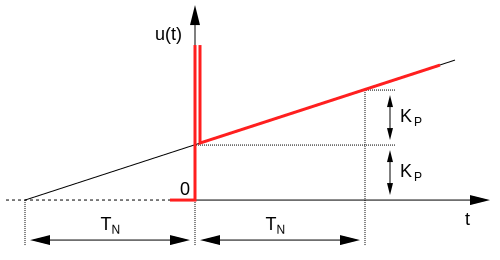
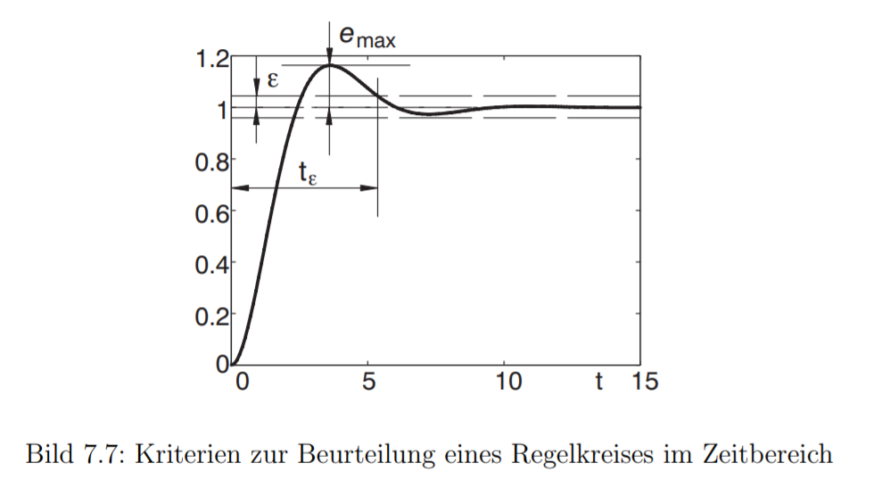
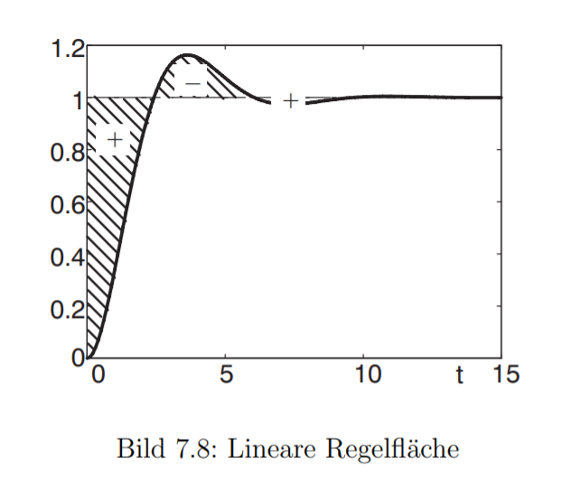
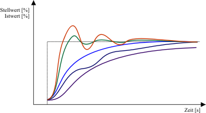
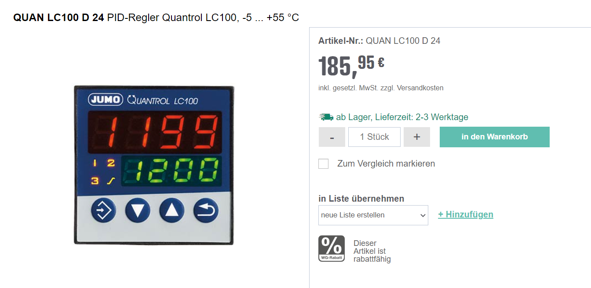
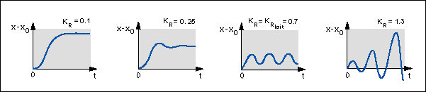

Regelverhalten
🧠 PID-Regler

- universellste der klassischen Regler
- Der PID-geregelte Kreis ist genau und sehr schnell, deshalb wird er bevorzugt in den meisten Anwendungen eingesetzt
- \(u(t)=K_P \cdot e(t) + \frac{1}{T_N}\int_0^te(\tau)d\tau + T_v \frac{de(t)}{dt}\)
Systeme ohne zeitliche Verzögerung

- alle Systeme reagieren unmittelbar auf Veränderungen der Eingänge
- z.B. wird die Lichtstärke der Lampe (\(u_r\)) erhöht, erhöht sich die Helligkeit im Raum (\(y\))
Systeme mit zeitlicher Verzögerung

- z.B. mit Erhöhung des Durchfluss durch die Heizung (\(u_r\)) erwärmt sich der Raum nur langsam (\(y\)). Das Thermometer gibt die gemessene Temperatur (\(y_m\)) nur mit Verzögerung weiter
Bestimmung des dynamischen Verhaltens

- Ziel der Regelungstechnik ist es ein erwünschtes Verhalten der Regelgröße \(y\) zu erhalten
- Mathematische Beschreibung und Analyse
- Simulationsprogramme: z.B. Matlab Simulink oder Scilab Xcos
https://www.samsongroup.com/document/l102de.pdf
Fazit
- Zeitverhalten von Regelkreisen wird durch alle Komponenten (Zeitverhalten) und die Einstellung des Reglers (gewählte Parameter) beeinflusst
- komplexere Regelkreise müssen als Gesamtheit betrachtet werden
- Beobachtung am echten System
- Modellierung durch Vereinfachung (Regelungstechnik)
- Kalibrierung am realen System
Regelverlauf der verschiedenen Reglertypen im Zeitverlauf

- Reaktion auf Sprungfunktion im einfachen Regelkreis
- Deutlich wird die bleibende Regelabweichung des P-Reglers
- Das schnelle Verhalten der Regler mit D-Anteil
https://rn-wissen.de/wiki/index.php/Regelungstechnik
Kriterien zur Beurteilung eines Regelkreises
- Führungsverhalten bei Anregung mit Sprungfunktion:
- Ausregelzeit \(t_\epsilon\): gibt den Zeitpunkt an, ab dem die Regelabweichung kleiner als eine vorgegebene Schranke \(±\epsilon\) ist.
- Maximale Überschwingweite \(e_{max}\): gibt den Betrag der maximalen Regelabweichung an, die nach dem erstmaligen Erreichen des Sollwertes auftritt

https://srv.ifr.ing.tu-bs.de/static/files/lehre/vorlesungen/gdr/Skript_GdR.pdf
Regelfläche
- Regelfläche: Die Fläche zwischen Führungsgröße und Ist-Wert kann als Maß definiert werden.
- Besonders sinnvoll ist die Beurteilung mittels der Regelfläche allerdings nur, wenn kein Überschwingen auftritt
- Alternativ z.B. Absolutwert des Integrals der Regelfläche

https://srv.ifr.ing.tu-bs.de/static/files/lehre/vorlesungen/gdr/Skript_GdR.pdf
Praktische Überlegungen
- Um eine gewünschtes Regelverhalten zu erreichen, muss ein geeigneter Regler mit den passenden Faktoren (z.B. Verstärkungsfaktor \(K_P\)) ausgewählt oder kalibriert werden.
- Hier lässt sich entweder ein Modell der Regelstrecke bilden. In der Praxis werden Regelkreise häufig durch Ausprobieren von Reglere instellungen eines PID-Regler kalibriert.
🤓 Praktische Überlegungen PID-Regler

https://de.wikipedia.org/wiki/Faustformelverfahren_(Automatisierungstechnik)
✍️ Aufgabe 3_3_1: Auswahl Reglerverhalten
Welchen Reglerverlauf wünschen Sie sich für folgende Anwendungen - Startoptimierung der Raumtemperatur (unter Energieffizienzgesichtspunkten) - Konstantlichtregelung (Beleuchtung aus Komfortgesichtspunkten) - Bewegungssteuerung eines Laufroboters
https://de.wikipedia.org/wiki/Faustformelverfahren_(Automatisierungstechnik)
Lösung
Welchen Reglerverlauf wünschen Sie sich für folgende Anwendungen - Startoptimierung der Raumtemperatur (unter Energieffizinzgesichtspunkten) * Langsam kein Überschwingen - Konstantlichtregelung (Beleuchtung aus Komfortgesichtspunkten) * Langsam kein Überschwingen - Bewegungssteuerung eines Laufroboters * Schnell, minimales Überschwingen
https://de.wikipedia.org/wiki/Faustformelverfahren_(Automatisierungstechnik)
Beispiele
Hardware PID-Regler

https://www.reichelt.at/at/de/pid-regler-quantrol-lc100-5--55-c-quan-lc100-d-24-p147710.html?PROVID=2807
Software Baustein PID-Regler

- Eingänge
rW: SollwertrX: Istwert- Eingangsparameter
rKp: Proportionalfaktor VerstärkungtTi: Integrierzeit [s]tTv: Vorhaltezeit [s]- Ausgänge
rY: StellgrößerXW: Regelabweichung
https://infosys.beckhoff.com/index.php?content=../content/1031/tf8000_tc3_hvac/4685059723.html&id=
Methode von Ziegler und Nichols
- heuristisches Verfahren zur Bestimmung von Reglerparametern
- nur für existierenden stabile Anlagen geeignet
- oder bei denen instabiles Verhalten keine Schäden verursachen kann

- Eigenschaft Regelstrecke und P-Regler
- dynamischen Eigenschaften hängen stark vom Verstärkungsfaktor (\(K_P\)) des Gesamtsystems ab.
- Ab bestimmtem \(K_P^{krit}\) beginnt die Regelgröße zu schwingen (Stabilitätsgrenze)
http://www.chemgapedia.de/vsengine/vlu/vsc/de/ch/7/tc/regelung/grundlagen/regelung_grundlagen.vlu/Page/vsc/de/ch/7/tc/regelung/grundlagen/regparam/regparam.vscml.html
Umformung mit Vorhalt- und Nachstellzeit für PID-Regler:
- Neben der Darstellung mit Vorhalte- und Nachhaltezeit findet sich auch häufig eine Darstellung mit Faktoren (\(K\)):
-
\(u(t)=K_P \cdot e(t) + \frac{1}{T_N}\int_0^te(\tau)d\tau + T_v \frac{de(t)}{dt}\)
-
\(u(t)=K_P e(t) + K_I\int_0^te(\tau)d\tau + K_d \frac{de(t)}{dt}\)
-
\(u(t)=K_P \cdot [e(t) + \frac{K_I}{K_P}\int_0^te(\tau)d\tau + \frac{K_D}{K_P} \frac{de(t)}{dt}]\)
Vorgehen Methode von Ziegler und Nichols (I)
- Voreinstellung des Reglers als reiner P-Regler:
- \(K_I=0\), \(K_D=0\)
-
bzw. \(T_v=0\), \(T_n=∞\)
-
\(u(t)=K_P e(t) + K_I\int_0^te(\tau)d\tau + K_D \frac{de(t)}{dt}\)
- \(u(t)=K_P \cdot [e(t) + \frac{1}{T_N}\int_0^te(\tau)d\tau + T_v \frac{de(t)}{dt}]\)
Methode von Ziegler und Nichols (II)
* Erhöhung von \(K_P\) (beginnend mit kleinen Werten von \(K_P\) ) bis zur Stabilitätsgrenze (die Regelgröße \(x\) beginnt gleichmaßig mit konstanter Amplitude zu schwingen) * Ablesen von \(K_P^{krit}\) Messung der beobachtbaren Periodendauer \(T^{krit}\) * Berechnung der Reglerparameter (\(K_P\), \(T_n\), \(T_v\)) entsprechend den folgenden Regeln:
Ziegler, John G., and Nathaniel B. Nichols. "Optimum settings for automatic controllers." trans. ASME 64.11 (1942)
Einstellregeln nach Ziegler und Nichols (III)
| \(K_P\) | \(T_n\) | \(T_v\) | |
|---|---|---|---|
| P-Regler | \(K_P = K_P^{krit} \cdot 0,5\) | ||
| PI-Regler | \(K_P\)=\(K_P^{krit} \cdot 0,45\) | \(T_n=0,85 \cdot T^{krit}\) | |
| PID-Regler | \(K_P\)=\(K_P^{krit} \cdot 0,6\) | \(T_n=0,5 \cdot T^{krit}\) | \(T_v=0,12 \cdot T^{krit}\) |
✍️ Aufgabe 3_2_2:

Kalibierten Sie den Regler für die folgenden Anwendungen nach der Methode von Ziegler und Nichols: Colab